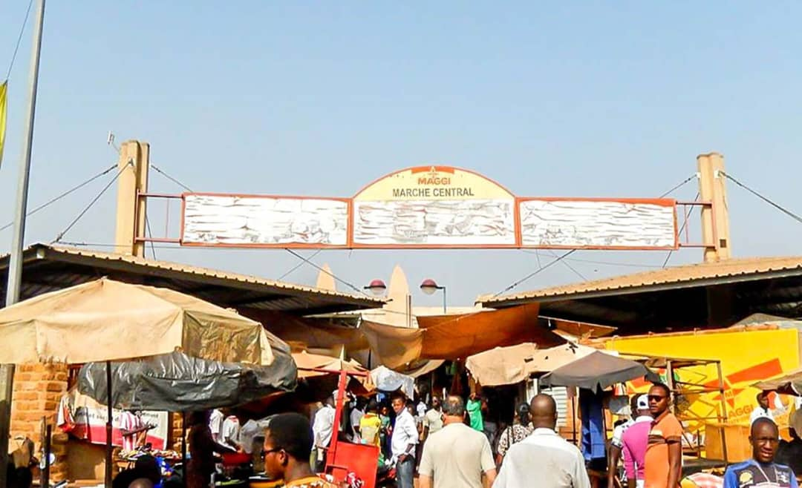

Le Grand Marché de BOBO-DIOULASSA
Description et Historique: Situé au coeur du triangle commercial de la ville sur l'axe reliant la Mairie à la Gare et créer en 1952,le marché de bobo est l'un des premiers centres commerciaux du Burkina Faso. Reputer particulièrement pour ces tissus, il occupe un vaste espace de quatre hectares composées de 3284 boutiques.Marché coloré,agreable et doté d'une belle atmosphère,il constitut une part importante dans l'economie de la ville et de la sous-région.C'est tout simplement un endroit merveilleux à decouvrir.